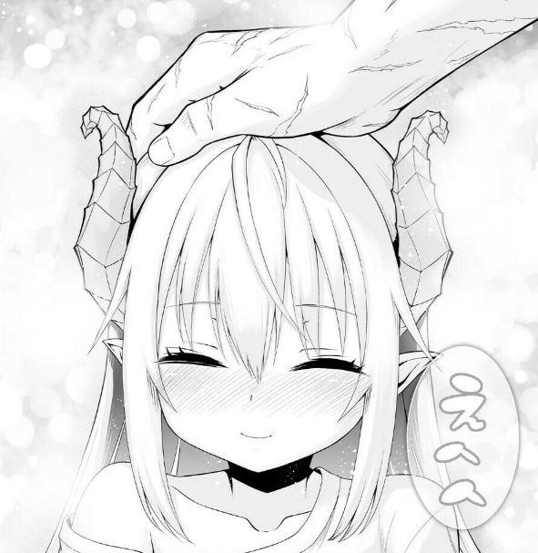

Real Pixel News
Ponkotsu Daishuryou-chan to Ossan Sentouin-san. es una nueva propuesta publicada por STUDIO HEADLINE, donde en un mundo de heroes destruido.
Nuestro prota es encomendado a una mision de alto valor cuidar a Gokua en un mundo humano.
La joven niña tiene que seguir los pasos de su padre y nuestro prota cumplir la mision encomendada por el gran jefe.
 El manga se estreno este pasado 31 de octubre, y cuenta con 1 solo capitulo.Visita este enlace y leelo